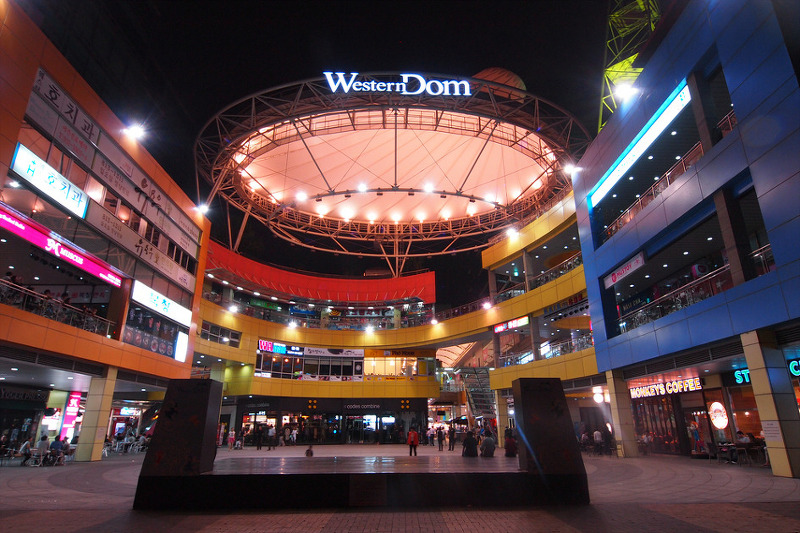

일산 호수공원
일산호수공원은 고양시의 명소로 고양시에 찾아왔으면 꼭 들려아하는 곳입니다. 커플들은 호수공원에서 힐링데이트를 즐길 수 있으며 가족들은 주말나들이를 즐길 수 있습니다.
호수공원은 호수를 중심으로 한 4.7km의 자전거도로와 메타세콰이어길 등 9.1km의 산책로는 시민들이 특별히 좋아하는 장소이며, 그 밖에 생태자연학습장, 조형예술품, 선인장전시관 등이 다양한 생태문화시설이 조성되어 있습니다.
호수공원 내에 서울시 '따릉이'와 같이 '피프틴'이라는 무인자전거대여 시스템이 곳곳이 설치되어있습니다. 호수를 바라보며 자전거와 함께 시원한 바람을 느끼면서 힐링할 수 있습니다. 또한, 피크닉용품을 호수공원 근처에서 대여하므로 간단한 피크닉을 즐기기에 매우 좋습니다.
호수공원 북쪽에는 노래하는 분수대가 있습니다. 노래하는 분수대는 주말의 밤을 장식하는 물과 빛의 음악 공연장으로 단순히 높낮이를 달리하는 물의 움직임이 아니라 선택한 음악의 고저장단을 물의 세기와 흐름으로 분석하는 복잡한 컴퓨터 작업을 통해 500여 가지의 미세하고 다양한 물의 변화를 표현하는 예술의 세계를 보여주고 있습니다. 클래식한 선율에 맞춰 중앙에 위치한 분수대에서 분수를 뿜어내어 편안하고 시원한 기분을 느낄 수 있습니다.
일산호수공원에서는 매년 5월에 국제 꽃 박람회를 개최합니다. 다양한 꽃들을 볼 수 있으며 쉽게 볼 수 없는 희귀 식물 전시, 화훼 조형 예술로 꾸며지는 실내 정원, 다채로운 야외 테마 정원, 화훼 문화 체험 프로그램, 꽃꽂이 경진 대회 등 꽃 문화 행사, 풍성한 공연·이벤트, 농가가 직접 재배하여 판매하는 화훼 판매장 등 오감이 즐거운 꽃 문화 축제로 펼쳐집니다. 가족들과 커플들이 와서 추억을 남기기 매우 좋으며 봄의 정취를 즐기기 좋은 축제입니다!
*주소 : 경기 고양시 일산동구 호수로 731웨스턴돔(Western Dom)
웨스턴돔은 일산에 있는 상업지구 중 하나입니다. CGV가 위치해 있어 영화를 언제든지 즐길 수 있습니다. 또한, 다양한 맛집들과 옷가게, 오락시설들이 위치해 있어
많은 커플들이 데이트 코스로 방문하는 곳으로 일산에 오면 한번쯤 들려야 하는 곳이에요!
지하철 3호선 정발산역과 버스정류장 일산동구청 역에서 가깝습니다.
만돈
서울에 유명한 돈까스 맛집들이 많은데 일산에도 있습니다. 바로 만돈입니다. 미식가 정식과 만돈 정식이 있는데 돈이 여유있는 분들은 미식가 정식을 아닌분들은 만돈 정식을 추천합니다! 히레까스와 로스까스가 있는데 히레까스는 좀 더 부드러운 식감, 로스까스는 좀 더 쫄깃한 식감으로 취향에 따라 주문하시는 것을 추천드려요!
오픈시간이 11시 30분인데 오픈시간에 맞춰서 가면 1시간 이상 기다릴수 있습니다! 오픈 30분 전에 가셔서 먼저 예약하시는 것을 추천드립니다!
오말리
오말리는 이탈리안 레스토랑으로 '서가앤쿡'과 비슷한 레스토랑입니다. 파스타와 스테이크 양이 많이 나오는 레스토랑으로 유명합니다. 뿐만 아니라 맛 또한 좋아서 인기있는 레스토랑입니다.
파스타의 기본 까르보나라와 매운 음식을 좋아하시는 분들께는 상하이 필라프를 추천드립니다.
밤리단길(일산앤틱거리보넷길)
서울에 가로숲길, 경리단길이 있다면 고양시에는 밤리단길이 있습니다. 빈티지한 앤틱가구들이 많아 일산앤틱거리보넷길이라고도 불립니다. 맛집, 레스토랑부터 분위기 있는 카페들이 있는 거리입니다. 분위기가 좋아서 데이트 코스로 많이 찾아오시기도 합니다. 브런치를 즐기고 싶은 분들은 이 곳으로 오시면 됩니다.
지하철 경의중앙선 풍산역에서 가깝습니다.
밤가시버거
밤가시버거는 일산에 몇없는 수제버거 전문점입니다. 일산에 몇없는 만큼 버거의 맛도 훌륭하니 수제버거를 좋아하시는 분들은 꼭 방문하셔야 됩니다! 특히 우리밀과 유기농밀가루로 번을 만들고 패티는 100% 소고기, 그리고 신선한 채소가 버거의 재료이기 때문에 안심하고 드실 수 있습니다!
인기가 많은 만큼 재료가 빨리 소진될수 있어 전화로 확인 후 방문하시는 것을 추천드립니다.
엘리스케이커리
엘리스케이커리는 홈메이드 디저트 카페로 케이크 맛집으로 유명합니다. 엔티크 가구로 인테리어 하여 엔티크한 카페로도 유명합니다. 케이크의 라인업은 매일마다 바뀝니다.
워낙 인기 많은 곳이라 좀 늦게 가면 원하시는 케이크를 못 드실 수도 있으니 일찍 방문하시기를 추천드립니다! 예약하면 홀케이크도 주문 가능합니다!
빈티지 카페를 찾는 분, 맛있는 케이크를 먹어보고 싶으신 분들께 이 카페를 추천합니다!